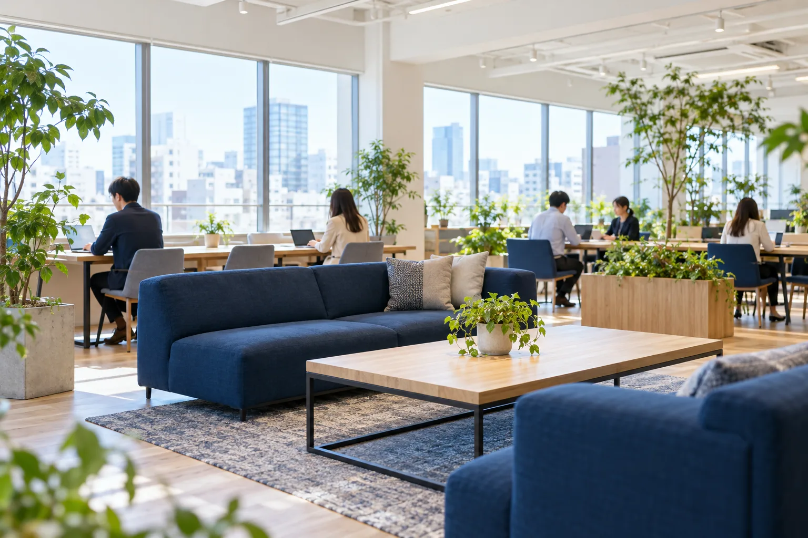

CA
キャリアアドバイザー
転職を考える方の、いちばん近くの相談相手。
面談で経験や希望、不安をじっくり伺い、求人のご紹介から応募書類の添削、面接対策、条件のすり合わせまで伴走します。1人あたりの担当は月20〜25名ほど。量より一人ひとりとの対話を大切にしています。
- オンライン・対面でのキャリア面談
- 求人のご提案と応募書類のサポート
- 面接対策・内定後の条件調整
2026年 中途採用・第二新卒 募集中
名古屋の人材紹介会社キャリアブリッジは、転職を考える一人ひとりと、東海の企業をつなぐ仕事をしています。
ABOUT US
キャリアブリッジは2014年に名古屋で生まれた、東海エリア特化の人材紹介会社です。製造業・IT・管理部門を中心に、地元で長く働きたい方と、人を大切に育てたい企業のあいだに立ってきました。
私たちが大切にしているのは、入社が決まった瞬間ではなく、その人が新しい職場で「ここに来てよかった」と思えるまでの時間です。だから求人の数を追うより、一社一社の現場に足を運び、社風や人間関係まで言葉にしてお伝えします。候補者の方にも、良いことだけを並べず、迷っていることを一緒に整理します。
派手な会社ではありません。でも、誰かの人生の分かれ道に誠実に立ち会える仕事だと、胸を張って言えます。
代表取締役
橋本 直樹
01
提案の前に、まず相手の言葉を最後まで聴く。面談の半分以上は「聴く時間」です。
02
求人票だけで紹介しない。企業訪問で見た空気感まで、候補者に届けます。
03
入社1か月・3か月・半年のタイミングで、ご本人と企業の両方に連絡を取ります。
OUR WORK
キャリアブリッジの紹介事業は、求職者の方を担当する「キャリアアドバイザー」と、企業を担当する「リクルーティングアドバイザー」の二人三脚で動いています。
CA
転職を考える方の、いちばん近くの相談相手。
面談で経験や希望、不安をじっくり伺い、求人のご紹介から応募書類の添削、面接対策、条件のすり合わせまで伴走します。1人あたりの担当は月20〜25名ほど。量より一人ひとりとの対話を大切にしています。
RA
企業の「こんな人に来てほしい」を形にする。
東海エリアの企業を訪問し、経営者や現場責任者から採用の背景や組織の課題を伺います。求人票づくりや選考プロセスのご提案も担当。採用がうまくいかない理由を、企業と一緒に考える仕事です。
BY THE NUMBERS
社員数
48名
名古屋本社・岐阜オフィス
平均年齢
32.6歳
中途入社の割合
85%
前職は販売・営業・事務など
女性管理職比率
40%
月平均残業時間
14.5時間
有給休暇取得率
76%
年間のキャリア面談数
約1,200件
オンライン面談を含む（2025年度）
※掲載の数値・声はポートフォリオ用の架空データです。
PEOPLE
入社前の経歴も、いまの役割もばらばら。3人に、この仕事を選んだ理由と、いまのやりがいを聞きました。
CA / 2022年入社
INTERVIEW 01
RA / 2020年入社
INTERVIEW 02
Manager / 2017年入社
INTERVIEW 03
※掲載の数値・声はポートフォリオ用の架空データです。人物写真はイメージです。
CASUAL TALK
志望動機の準備はいりません。服装も自由です。採用担当の村瀬が、仕事のリアルな部分も含めてお話しします。
ONE DAY
早川さん（CA／2022年入社）の1日を追いました。面談は1日3〜4件が目安です。
前日の面談のお礼や、企業からの選考結果をチェック。
15分で今日の面談予定と、気になっている方の状況を共有。
担当RAから届いた企業の最新情報を確認し、推薦文をまとめます。
初回面談は60〜90分。経歴よりも「これからどうしたいか」を中心に伺います。
オフィスでお弁当、または近くの定食屋へ。
翌週に面接を控えた方と、想定質問の練習を一緒に。
企業担当と候補者の印象を共有し、提案の方向性を決めます。
入社1か月を迎えた方へ近況伺いのご連絡。
翌日の予定を確認して、今日はここまで。
CULTURE & BENEFITS
人の転職を支える会社だからこそ、自分たちの働き方も大切にしています。

名古屋本社。窓際のラウンジは面談前の準備や、ちょっとした相談に。
コアタイムは11時〜15時。通院や送り迎えにも合わせやすい働き方です。
入社3か月以降、チームと相談のうえで在宅勤務を選べます。
入社から半年間、先輩社員がひとり専属でつき、週1回の面談でサポートします。
キャリアコンサルタントなど、業務に関わる資格の受験費用・講座費用を補助。
仕事に役立つ本は月5,000円まで会社負担。社内の本棚で共有しています。
短時間勤務は子どもが小学校を卒業するまで利用可能。男性の育休取得者もいます。
土日祝休み。夏季・年末年始休暇に加え、誕生月に使える特別休暇があります。
月1回、業界や職種ごとの勉強会を開催。未経験の方も知識を積み上げられます。
JOB DESCRIPTION
人材業界が未経験の方も歓迎します。入社後3か月は研修とOJTで、基礎から一緒に身につけていきます。
| 仕事内容 | 転職を希望される方とのキャリア面談、求人のご提案、応募書類の添削や面接対策、内定後の条件調整、入社後のフォロー。 |
|---|---|
| 応募資格 | 社会人経験2年以上（職種・業界は問いません）／基本的なPC操作ができる方 歓迎：接客・販売・営業・人事のご経験、キャリアコンサルタント資格 |
| 給与 | 月給25万円〜38万円＋インセンティブ（年2回） 想定年収 380万円〜600万円（経験・能力を考慮して決定） |
| 勤務地 | 名古屋本社（愛知県名古屋市〇〇区〇〇1-2-3） 転勤なし。在宅勤務 週2日まで可（入社3か月以降） |
| 勤務時間 | フレックスタイム制（コアタイム 11:00〜15:00／標準 9:00〜18:00） |
| 休日・休暇 | 完全週休2日制（土日）、祝日、夏季・年末年始休暇、有給休暇、誕生月休暇、慶弔休暇／年間休日125日 |
| 福利厚生 | 各種社会保険完備、交通費全額支給、資格取得支援、書籍購入補助、短時間勤務制度、退職金制度 |
| 仕事内容 | 東海エリアの企業への訪問・採用ニーズのヒアリング、求人票の作成、候補者のご推薦、選考の調整、採用計画のご提案。 |
|---|---|
| 応募資格 | 法人営業のご経験2年以上（業界は問いません）／普通自動車免許（AT限定可） 歓迎：製造業・IT業界での勤務経験、人材業界でのご経験 |
| 給与 | 月給27万円〜40万円＋インセンティブ（年2回） 想定年収 420万円〜650万円（経験・能力を考慮して決定） |
| 勤務地 | 名古屋本社（愛知県名古屋市〇〇区〇〇1-2-3）または岐阜オフィス（岐阜県岐阜市〇〇町1-2-3） 社用車での企業訪問あり |
| 勤務時間 | フレックスタイム制（コアタイム 11:00〜15:00／標準 9:00〜18:00） |
| 休日・休暇 | 完全週休2日制（土日）、祝日、夏季・年末年始休暇、有給休暇、誕生月休暇、慶弔休暇／年間休日125日 |
| 福利厚生 | 各種社会保険完備、交通費全額支給、資格取得支援、書籍購入補助、短時間勤務制度、退職金制度 |
※掲載の条件・数値はポートフォリオ用の架空データです。
FAQ
はい。現在働いている社員の多くが、販売・営業・事務など他業界からの転職です。入社後3か月は座学研修と先輩の面談への同席を中心に、段階的に担当を持っていただきます。
チーム単位の目標はありますが、個人に過度な数字を課す運用はしていません。目標の進み具合よりも、担当している方への支援の質を週1回の1on1で一緒に振り返ります。
会社や仕事内容のご説明と、ご質問への回答が中心です。選考とは切り離していますので、志望動機の準備は必要ありません。服装も自由です。
はい。面接は平日の夜（19時開始まで）やオンラインにも対応しています。入社日もご事情に合わせてご相談ください。
エントリー時にはどちらか一方を選んでいただく必要はありません。面談でご経験や志向を伺いながら、一緒に考えましょう。入社後に職種を変えた社員もいます。
ENTRY
エントリーいただいた方には、採用担当の村瀬より3営業日以内にメールでご連絡します。「話を聞いてから考えたい」という方は、カジュアル面談をお選びください。履歴書は後日で大丈夫です。